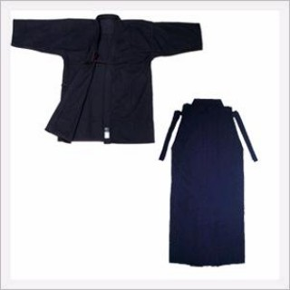

Informações
Para iniciar uma prática:
Jodo
Quartas-feiras, das 19:00 às 21:00 (Quartel dos Bombeiros Velhos, Aveiro)
Iaido
Terças-feiras, das 19:00 às 20:30 (Pavilhão UINFOC, Campus de Santiago da Universidade de Aveiro, Aveiro)
Sábados, das 10:00 às 12:00 (Pavilhão UINFOC, Campus de Santiago da Universidade de Aveiro, Aveiro)
Kendo
Segunda-feiras, das 19:00 às 20:30 (Pavilhão UINFOC, Campus de Santiago da Universidade de Aveiro, Aveiro)
Quintas-feiras, das 19:00 às 20:30 (Pavilhão UINFOC, Campus de Santiago da Universidade de Aveiro, Aveiro)
Para estar a par das últimas atualizações acompanhe a página do Asakazekan Kendo no Facebook
O uniforme de Jodo e Iaido é composto por um Keiko-gi (casaco), Obi (cinto) e Hakama (saia-calça).
Já o Kendo, para além do Keiko-gi (casaco) e Hakama (saia-calça), usa ainda um Tare (Proteção especial do baixo abdómen) com Zekken (distintivo).
O casaco pode ter o nome da disciplina: Jodo-gi, Iaido-gi ou Kendo-gi ou apenas referir-se à prática (Keiko-gi).
As cores normalmente utilizadas em Iaido são o preto ou o branco.
As cores normalmente utilizadas em Jodo e Kendo são o azul ou o branco.
Os uniformes devem ser de uma só cor (i.e. totalmente pretos, brancos ou azuis).
Os principiantes, sobretudo durante a fase introdutória à modalidade, podem utilizar outro vestuário mediante o acordo obtido do respetivo instrutor.

Consoante a modalidade, são utilizadas diversas armas.
Todas as armas são normalizadas e próprias para a prática, respeitando materiais, normas de segurança, peso e medidas que são pré-definidas pelas entidades internacionais, reguladoras das mesmas.
Não podem ser utilizadas armas que não obedeçam à aprovação prévia dos instrutores, que saberão aconselhar os praticantes dos locais mais apropriados para adquirir os equipamentos, bem como quais as caraterísticas a ter em conta para que o material seja apropriado para o nível técnico do praticante, bem como a intensidade ou exigências da prática.
Em todas as modalidades, é comum utilizarem-se sabres de madeira maciça (Bokken ou Bokuto).
A arma específica utilizada na prática de Jodo é o Jo ou bastão de madeira de dimensão média. No âmbito do currículo tradicional existe também a prática com o Tanjo ou bastão de madeira de curta dimensão.
Para praticar Iaido é necessário um Iaito, i.e. sabre de Iai, que é uma réplica fiel do sabre japonês tradicional ou nihonto genuíno mas sem lâmina viva.
Já o Kendo, requer um Shinai ou sabre de bambú, que tem caraterísticas próprias, adequadas à prática desta modalidade.
Em termos gerais, a prática de Jodo e Iaido não requerem material de proteção específico.
Já o Kendo requer obrigatoriamente um conjunto próprio de proteções ao qual se dá o nome de Bogu (armadura de proteção).
O Bogu é constituído por quatro elementos: O Men (para proteger a cabeça); o Do (para proteger o torso); Os Kote (para proteger as mãos e os pulsos); e o Tare (para proteger o baixo abdómen).